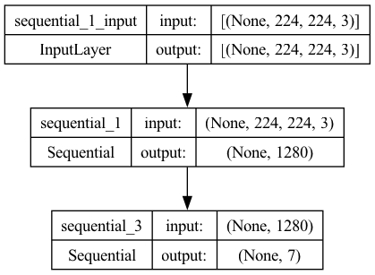

Jaymin Ding is a current junior in high school in New York. He has great interests in physics, astrophysics/astronomy, computer science, and STEM. He made this website as part of his research project for his independent study in physics.
Welcome to the Star Classification project!
This tool classifies stars into one of the seven spectral types on the Morgan-Keenan (MK) system: O, B, A, F, G, K, and M. The MK system is the most widely used system for classifying stars, and it is based on the temperature of the star's surface. The hottest/bluest stars are classified as O, and the coolest/reddest stars are classified as M. The Sun is a G-type star.
Here, rather than using temperature and/or luminosity to classify, we use computer vision and images of the stars to classify. The model was trained on 100-2,100 images of each spectral type, for a total of 9,030 images. The model consists of Google's pretrained MobileNetV2 and two dense layers. The model was trained for 50 epochs, with a final test accuracy of 97.9%.
Model: "sequential_4"
_________________________________________________________________
Layer (type) Output Shape Param #
=================================================================
sequential_1 (Sequential) (None, 1280) 410208
sequential_3 (Sequential) (None, 7) 128800
=================================================================
Total params: 539008 (2.06 MB)
Trainable params: 524928 (2.00 MB)
Non-trainable params: 14080 (55.00 KB)
_________________________________________________________________
